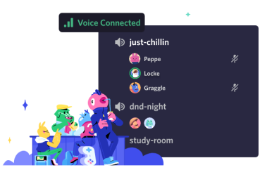

Crie um espaço controlado por convite onde você se sinta em casa
Os servidores Discord são organizados em canais com assuntos para vocês colaborarem, compartilharem ou simplesmente falarem do dia sem entupir um chat geral.

Aqui é fácil se encontrar
Entre no canal de voz quando estiver à toa. Amigos no mesmo servidor podem te ver e entrar imediatamente, sem nem ter que fazer a chamada.